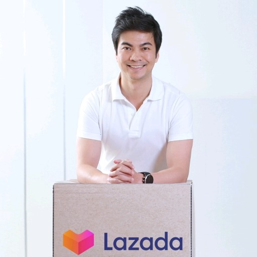

Về tập đoàn Lazada
Thành lập vào 2012, Lazada là địa chỉ mua sắm và bán hàng trực tuyến số một khu vực Đông Nam Á, có mặt tại Indonesia, Malaysia, Philippines, Singapore, Thái Lan và Việt Nam. Với mạng lưới thanh toán và logistics lớn nhất trong khu vực, Lazada đã trở thành một phần không thể thiếu trong đời sống hàng ngày của người tiêu dùng tại Đông Nam Á. Từ năm 2016, Lazada là nền tảng chiến lược về thương mại điện tử ở khu vực với sự hỗ trợ về hạ tầng công nghệ từ Tập đoàn Alibaba. Tới năm 2030, mục tiêu của Lazada là sẽ phục vụ cho 300 triệu khách hàng trên toàn Đông Nam Á. Xem thêm thông tin về Lazada Đông Nam Á tại:http://corporate.lazada.com. Thông tin về Giám đốc Điều hành Lazada Việt Nam:
JAMES DONG - GIÁM ĐỐC ĐIỀU HÀNH LAZADA VIỆT NAM
James Dong là Giám đốc Điều hành của Lazada Việt Nam và Lazada Thái Lan. James bắt đầu làm việc tại Lazada vào tháng 6/2018 với vai trò là CEO của Lazada Thái Lan và được bổ nhiệm vào vị trí CEO của Lazada Việt Nam một năm sau đó (vẫn kiêm nhiệm vị trí tại Thái Lan). Trước khi làm việc tại Lazada, ông từng là Trưởng Bộ phận Toàn cầu hóa & Phát triển doanh nghiệp cũng như là Trợ lý Kinh doanh của ông Daniel Zhang, Giám đốc Điều hành Tập đoàn Alibaba. James là người định hướng chiến lược toàn cầu hóa và quản lý danh mục đầu tư trong lĩnh vực thương mại điện tử, bao gồm cả việc sáp nhập Lazada. Ông cũng là người kết nối Tập đoàn Alibaba với 10 đối tác toàn cầu. Trước khi gia nhập Tập đoàn Alibaba, James từng là Phó Tổng Giám đốc (Associate Partner) phụ trách mảng Thực tiễn số (Digital Practice) tại Tập đoàn McKinsey. James tốt nghiệp Thạc sỹ Kinh doanh tại Đại học Cambridge.
Tìm Hiểu Thêm về LAZADA
Liên Hệ
Thông tin báo chí, vui lòng liên hệ:
Bà Lưu Hạnh